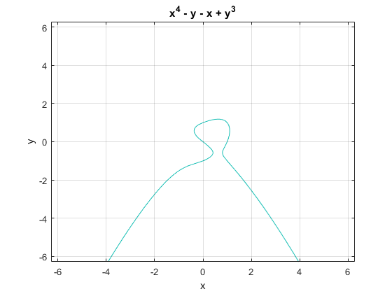

Functii | Calcul Simbolic
Contents
- Functii
- Definirea functiilor
- Instructiunea global
- Variabile handle de functii
- Vectorizarea functiilor
- Aplicarea functiilor asupra tablourilor de celule
- Calcul simbolic
- Definirea variabilelor si functiilor simbolice
- Substitutii
- Reprezentarea simbolica a numerelor
- Definirea de variabile simbolice reale si complexe
- Matrice simbolice
- Crearea de functii abstracte
- Reprezentarea grafica a functiilor
Functii
Definirea functiilor
Functiile se definesc în fisiere cu extensia .m . Linia de definitie a unei functii este : function [y1, y2, …, yn ] = numefunctie (x1, x2, … xk). Variabilele x1, x2, …, xk sunt parametri de intrare. Variabilele y1, y2, …, yn sunt calculate de functie si sunt parametrii de iesire. Parametrii din definitia functiei se numesc formali. Functiile pot avea propriile variabile locale. Functiile opereaza asupra variabilelor din propriul lor spatiu, adica variabilele locale si parametrii.
Exemplu
[a, b] = patrcub(2)
a =
4
b =
8
O functie este apelata ca termen intr-o expresie. Parametrii formali din definitia functiei sunt inlocuiti la apelare cu parametrii actuali. Parametrii de intrare actuali pot fi expresii ce contin constante, variabile sau functii. De exemplu, functia de mai sus este apelata ca [a, b] = pc(2).
Orice functie are 2 parametri impliciti de intrare:
-> nargin – numarul de parametri de intrare;
-> nargout – numarul de parametri de iesire.
Executia unei functii se termina in mod normal la sfarsitul functiei. Pentru a termina executia functiei mai inainte se utilizeaza instructiunea return.
Functiile sunt salvate in fisiere ce au numele functiei si extensia .m . Intr-un fisier .m se pot defini mai multe functii, apelate de prima functie definita in fisier.
Instructiunea global
Instructiunea global se utilizeaza pentru a defini variabile globale. Daca mai multe functii si spatiul de baza trebuie sa utilizeze aceeasi variabila, aceasta variabila trebuie declarata globala, in fiecare functie si in spatiul de baza. La atribuirea unei valori acestei variabile in orice functie sau in spatiul de baza, valoarea este accesibila tuturor functiilor si spatiul de baza ce au declarat variabila ca globala.
Forma instructiunii global este : global v1 v2 … .
Exemplu :
Fie functia urmatoare ce utilizeaza o variabila globala numita comp ce contine o matrice.
Programul urmator citeste o matrice in variabila globala comp si apoi apeleaza functia fcn.
Se declara variabila globala comp
global comp % citeste datele din fisierul comp.txt în matricea comp load comp.txt x = [1, 2] ; fcn(x)
ans =
11
Variabile handle de functii
O variabila de tip handle de functii contine toate informatiile necesare despre o functie care trebuie apelata mai tarziu. De obicei, o variabila de tip handle de functii este pasata ca argument unei alte functii.
Instructiunea fh = @numefunctie memoreaza in variabila fh un handle al functiei numefunctie. Variabila fh poate fi pasata ca argument altei functii. Apelarea functiei numefunctie pasata printr-o variabila handle se face astfel : fh (lista de parametri) unde lista de parametri contine parametrii actuali ai functiei numefunctie.
Exemplu:
Fie functia fun1(x) care calculeaza valoarea (x + 1) ^ 2. Functia este memorata in fisierul fun1.m .
Sa calculam valoarea fun1(1.3). Functia poate fi apelata in doua moduri:
• ca o expresie in membrul drept al unei instructiuni de atribuire:
z = fun1(1.3)
z =
5.2900
• printr-o variabila handle:
fh = @fun1;
z = fh(1.3)
z =
5.2900
Exemplu:
Fie functia fun2(x,y) ce calculeaza suma si suma patratelor a doua numere. Functia este memorata in fisierul fun2.m .
Vom apela functia cu valorile x=2.1, y=-0.8:
• ca o expresie in membrul drept al unei instructiuni de atribuire:
[z1 z2] = fun2(2.1, -0.8)
z1 =
1.3000
z2 =
5.0500
• printr-o variabila handle:
hf = @fun2;
[z1 z2] = hf(2.1, -0.8)
z1 =
1.3000
z2 =
5.0500
In exemplele anterioare, functiile erau definite in fisiere .m . Este posibil sa definim in program functii limitate la o singura expresie, fara nume, si sa le atribuim unei variabile handle. Ele sunt apelate prin variabila handle, ca mai inainte. Asemenea functii fara nume se numesc anonime . Definitia unei functii anonime este @(lista parametrilor formali de intrare) expresia functiei .
Exemplu:
Sa definim o functie anonima ce calculeaza expresia (x+1)^2 si sa o apelam cu x=2.1 .
fx = @(x)(x+1)^2 ;
z = fx(2.1)
z =
9.6100
Exemplu:
Sa definim o functie anonima care calculeaza suma si suma patratelor a doua numere in vectorul [x+y, x^2+y^2]. O vom apela cu valorile 1.3 si -0.8.
fz=@(x,y)[x+y, x^2+y^2] ;
[z]=fz(1.3,-0.8)
z =
0.5000 2.3300
O functie definita intr-un fisier .m poate avea ca parametru de intrare o variabila handle. Variabila handle se poate initializa cu o functie definita intr-un fisier .m , cu o functie anonima, sau cu o functie standard Matlab. In acest fel, o functie poate avea ca parametri alte functii. Fie fcn o functie ce are ca parametru o alta functie: x = fcn(f, lista de parametri). Aici f este o variabila handle, iar lista de parametri va contine parametrii lui f si alti parametri ai functiei fcn. Fie fun o functie ce va fi pasata ca parametru functiei fcn.
Apelarea functiei fcn se face cu urmatoarea secventa de instructiuni:
• creaza variabila handle f
f = @fun ;
• paseaza variabila handle si lista de parametri actuali ai functiilor fcn si fun
x = fcn(f, lista de parametri actuali);
Exemplu:
Fie functia funb(x) ce va calcula expresia sin(f(x)) , unde f(x) este o functie oarecare, ce va fi parametru al functiei funb. Functia funb este memorata in fisierul funb.m .
Vrem sa calculam expresiile sin(x^2) si sin(x^3) cu x = 2.1 . Vom defini functia funa ce calculeaza valoarea x^3 si func care calculeaza valoarea x^2.
Apelam functia funb cu primul parametru handle al functiei funa si al doilea parametru 2.1 si obtinem:
fh=@funa
z=funb(fh,2.1)
fh =
function_handle with value:
@funa
z =
0.1630
Apelam functia funb cu primul parametru handle al functiei func si al doilea parametru 2.1 si obtinem:
fh=@func
z=funb(fh,2.1)
fh =
function_handle with value:
@func
a =
4.4100
z =
-0.9546
Exemplul de mai sus are rolul de a exemplifica utilizarea functiilor Matlab ce au ca parametri alte functii. In cazul in care functia ce este parametru este simpla, putem utiliza o functie anonima ca parametru.
z = funb(@(x)x^3, 2.1)
z =
0.1630
Limbajul Matlab are functia standard feval care se utilizeaza pentru evaluarea functiilor standard si a celor utilizator din fisierele .m . Functia feval utilizeaza o variabila tip handle pentru a evalua functiile. Functia feval are forma: feval(handle, arg1, arg2, …, argn), unde:
handle – variabila handle a functiei ce va fi evaluata;
arg1, arg2, ..., argn – parametrii functiei ce va fi evaluata.
Vom rescrie exemplele de mai sus utilizand functia feval. Fie functia funb2 ce calculeaza expresia sin(f(x)).
Functia funb2 este apelata pentru a calcula sin(2.1^3) astfel:
fh=@funa;
b=funb2(fh,2.1)
b =
0.1630
Varianta II
Functia funb3 este apelata pentru a calcula sin(2.1^2) astfel:
fh=@func;
b=funb3(fh,2.1)
a =
4.4100
b =
-0.9546
Functia feval poate evalua si functii anonime. De exemplu, pentru a calcula valoarea expresiei x^3 pentru x=1.5 putem scrie:
feval(@(x)x^3,1.5)
ans =
3.3750
Matlab are functia predefinita functions ce are ca parametru o variabila tip handle de functii si ca rezultat o structura cu informatiile despre functia continuta in variabila handle. De exemplu, pentru a obtine structura cu informatii despre functia funa vom scrie:
a = functions(@funa)
a =
struct with fields:
function: 'funa'
type: 'simple'
file: 'E:\FACULTATE\ANUL I SEM II\Calcul Numeric\Teme\tema2\funa.m'
Pentru a afla doar fisierul in care este definita functia vom afisa campul file al structurii a in felul urmator:
a.file
ans =
'E:\FACULTATE\ANUL I SEM II\Calcul Numeric\Teme\tema2\funa.m'
Vectorizarea functiilor
Toate functiile standard Matlab pot fi aplicate asupra vectorilor si matricelor. In acest caz functia se aplica asupra fiecarui element al vectorului sau matricei (vectorizarea functiei). Fie de exemplu vectorul:
a=[1.1, -2.3, pi]
a =
1.1000 -2.3000 3.1416
b=sin(a)
b =
0.8912 -0.7457 0.0000
Aplicarea functiilor asupra tablourilor de celule
Functia cellfun() permite sa aplicam o functie asupra fiecarui element al unui tablou de celule. Atunci cand rezultatul functiei este un scalar si valorile scalare pot fi concatenate intr-un tablou, cellfun() are forma: A = cellfun(fun, C1, C2, …), unde Ci sunt tablouri de celule, iar fun este o variabila handle de functie ce se aplica asupra fiecarei celule din Ci.
Exemplu:
Sa calculam lungimea tablourilor din celulele vectorului X
X={1:10, [2; 4; 6]}
cellfun(@length,X)
X =
1×2 cell array
{1×10 double} {3×1 double}
ans =
10 3
Functia cellfun are si forma: A = cellfun(fun, C1, C2, … ‘Param1’, val1, …), unde Parami sunt parametri, iar vali sunt valorile acestor parametri.
Atunci cand functia fun nu are ca rezultat un scalar, sau rezultatele nu pot fi concatenate intr-un tablou, utilizam parametrul UniformOutput pus la valoarea false. Exemplu:
Sa aplicam functia abs asupra elementelor vectorului de celule X. Rezultatul aplicarii functiei abs asupra unei celule este un vector.
R = cellfun(@abs, X, 'UniformOutput' , false)
R =
1×2 cell array
{1×10 double} {3×1 double}
celldisp(R)
R{1} =
1 2 3 4 5 6 7 8 9 10
R{2} =
2
4
6
Calcul simbolic
Definirea variabilelor si functiilor simbolice
Calculul simbolic opereaza cu obiecte simbolice: variabile, matrice si expresii simbolice. Variabilele simbolice se definesc in doua feluri:
• cu instructiunea syms, care defineste variabile simbolice;
• orice variabila ce primeste ca valoare o expresie simbolica devine o variabila simbolica; atribuirea de valori unei variabile se face cu operatorul "=".
Instructiunea syms are forma: syms var var var ... , unde var sunt nume de variabile simbolice.
Exemplu:
Definim variabilele simbolice a,b si c cu instructiunea syms si atribuim variabilei a ca valoare expresia simbolica b+c .
syms a b c a=b+c
a = b + c
Fie instructiunea m=b+c, m este acum o variabila simbolica, deoarece a primit ca valoare o expresie simbolica.
Expresiile simbolice se definesc la fel ca expresiile aritmetice din Matlab, in care variabilele numerice sunt inlocuite cu variabile simbolice. Se includ aici si vectorii si matricele cu elemente expresii simbolice, asupra carora se pot efectua calcule simbolice analoge calculelor numerice din Matlab.
Expresiile simbolice au ca termeni variabile simbolice si functii simbolice si ca operatori aritmetici: +, -, *, /, \, ^ . Operatorii, +, -, , /, sunt cei patru operatori aritmetici cunoscuti. Operatia *"a \ b" se defineste ca (1/a)*b. Operatorul "^" este ridicarea la putere.
Prioritatile operatorilor aritmetici sunt cele cunoscute. Operatorii + si – unari au cea mai mare prioritate, urmati de operatorii *, /, \, ^, iar operatorii + si – binari au cea mai mica prioritate. Operatorii unari sunt asociativi la dreapta, operatorii binari sunt asociativi la stanga. In cadrul expresiilor aritmetice se pot utiliza paranteze rotunde, ( si ), pentru a modifica prioritatile operatorilor.
Functiile matematice uzuale ce se pot utiliza in expresiile simbolice sunt cele de mai jos :
sin asin sqrt exp
cos acos abs log
tan atan log10
Exista inca un mod de a crea expresii simbolice, functia sym . Aceasta functie are forma sym(' expresie simbolica') si are ca rezultat o expresie simbolica ce poate fi atribuita unei variabile simbolice. Reamintim ca o expresie simbolica are ca termeni variabile simbolice, definite anterior.
Exemple:
Sa definim functia simbolica liniara f(x) = a * x + b . Primul mod de a defini functia este de a defini variabilele simbolice a, x, b si f cu instruc?iunea syms si apoi atribuim lui f ca valoare expresia simbolica:
syms a x b f; f = a * x + b
f = b + a*x
Al doilea mod defineste expresia simbolica cu functia sym:
syms a x b f;
f = sym ('a * x + b');
In unele cazuri trebuie sa cream expresii simbolice in care intervin constante. Acest lucru se face cu functia sym. De exemplu, pentru a crea o functie simbolica constanta ce are valoarea 3 vom scrie:
f=sym('3')
f = 3
sau
f= sym(3)
f = 3
Exemplu:
Vom defini variabilele simbolice a, b ?i x si polinoamele simbolice f(x) = a*x^2 + 2 si g(x) = x + b si vom calcula produsul lor, f(x) * g(x). Programul este urmatorul:
syms a b x f g; f = a *x^2+2 g = x + b f * g
f = a*x^2 + 2 g = b + x ans = (b + x)*(a*x^2 + 2)
Exemplu:
Sa definim variabila simbolica x si functia simbolica g(x) = radical din x^2+x+1.
syms x g; g = sqrt(x^2 + x + 1)
g = (x^2 + x + 1)^(1/2)
Substitutii
Este posibil sa atribuim valori numerice variabilelor simbolice si, in acest caz, expresiile simbolice sunt evaluate la valoarea numerica corespunzatoare. Aceste substitutii ale variabilelor simbolice cu valori numerice se fac cu functia subs cu formele: subs(expresie simbolica, variabila simbolica, valoare numerica) , in cazul cand substituim o singura variabila, si subs(expresie simbolica, {variabile simbolice}, {valori numerice}) , in cazul cand substituim mai multe variabile.
Exemplu:
Fie functia simbolica f(x)=x^2 - 3*x + 2. Vom substitui variabila simbolica x cu valoarea 2.
syms f x; f = x^2 - 3 * x + 2; subs(f, x, 2) subs(f, x, -2)
ans = 0 ans = 12
Exemplu:
Fie functia de doua variabile f(x,y)=x^2+x*y. Vom substitui variabila simbolica x cu 2.
syms x y f; f = x^2 + x * y; subs(f, x, 2) subs(f, y, 3) subs(f, {x, y}, {-1,2})
ans = 2*y + 4 ans = x^2 + 3*x ans = -1
Reamintim ca, lista cu variabilele simbolice ce vor fi substituite si lista cu valori sunt incluse intre acolade, { }. In cazul cand substituim o singura variabila simbolica cu o valoare, functia subs are si urmatoarea forma simpla: subs(expresie simbolica, valoare numerica) .
Daca expresia simbolica depinde de mai mult de o variabila si variabila pentru care se face substitutia nu este specificata, substitutia se face pentru variabila simbolica implicita, care se alege dupa urmatoarea regula:
-> se alege litera cea mai apropiata de x din alfabet;
-> daca exista doua litere egal departate de x, se alege ultima din alfabet din cele doua.
Exemplu:
syms x t; f = t^2 * cos(x + t) subs(f,2)
f = t^2*cos(t + x) ans = t^2*cos(t + 2)
Dupa cum se observa, se substituie variabila simbolica x cu valoarea 2, aleasa dupa regula de mai sus.
Variabilele simbolice dintr-o expresie se pot determina cu functia findsym .
Exemplu:
syms t omega psi f x g; f = cos(omega * t + psi); g = x^3 - x +1 findsym(f) findsym(g)
g =
x^3 - x + 1
Warning: FINDSYM will be removed in a future
release. Use SYMVAR instead.
ans =
'omega,psi,t'
Warning: FINDSYM will be removed in a future
release. Use SYMVAR instead.
ans =
'x'
Variabila simbolica implicita dintr-o expresie f se poate determina cu functia findsym(f,1) .
Exemplu:
syms x t; f = t^2 * cos(x + t) findsym(f, 1)
f =
t^2*cos(t + x)
Warning: FINDSYM will be removed in a future
release. Use SYMVAR instead.
ans =
'x'
Mentionam ca pentru afisarea expresiilor simbolice intr-un format apropiat de cel din matematica se utilizeaza functia pretty ce are ca parametru expresia simbolica.
Reprezentarea simbolica a numerelor
Numerele se reprezinta simbolic in urmatoarele feluri:
-> in virgula mobila, sub forma unei mantise inmultita cu 2 la un anumit exponent; mantisa contine 13 cifre hexazecimale;
-> ca numar rational, ca raport a doua numere intregi;
-> ca numar rational plus precizia relativa; precizia relativa este diferenta intre valoarea numarului rational si valoarea lui reprezentata in virgula mobila, si este exprimata in functie de eps, precizia reprezentarii numerelor in virgula mobila;
-> ca numar zecimal cu un numar specificat de cifre semnificative; implicit, numarul de cifre este 32, dar el poate fi specificat cu functia digits dupa cum se arata mai jos. Conversia intre numar si reprezentarea sa simbolica se face cu functia sym cu un parametru ce specifica tipul reprezentarii simbolica dupa cum se arata mai jos.
in virgula mobila -> sym(x, 'f');
ca numar rational -> sym(x, 'r');
ca numar rational plus precizia relativa -> sym(x, 'e');
ca numar zecimal cu un numar specificat de cifre semnificative -> sym(x, 'd').
Operatiile cu numere rationale se fac dupa regulile din aritmetica.
Exemplu:
sym(2)/sym(3) + sym(4)/sym(5)
ans = 22/15
Exemplu:
Fie numarul 0.2, a carui valoare va fi convertita intr-un numar symbolic in formele de mai sus.
sym(0.2, 'f')
ans = 3602879701896397/18014398509481984
sym(0.2, 'r')
ans = 1/5
sym(0.2, 'e')
ans = eps/20 + 1/5
sym(0.2, 'd')
ans = 0.2
digits(10)
sym(0.2, 'd')
ans = 0.2
Definirea de variabile simbolice reale si complexe
O variabila complexa este o pereche ordonata de doua variabile reale. Fie x si y doua variabile reale. O variabila complexa este z = x + i * y, unde x este partea reala, y este partea imaginara a variabilei z, iar i = sqrt(-1). Pentru a defini o variabila complexa trebuie sa definim mai intai doua variabile simbolice reale, corespunzand partii reale si celei imaginare a variabilei complexe, apoi utilizam formula de mai sus in care variabila i este predefinita. Pentru aceasta se utilizeaza instructiunea syms cu optiunea real sau functia sym cu aceeasi optiune:
-> cu instructiunea syms:
syms x y real z = x + i * y
z = x + y*1i
-> cu functia sym:
x = sym('x', 'real'); y = sym('y', 'real'); z = x + i * y
z = x + y*1i
In expresiile cu numere complexe se pot utiliza functiile matematice standard: real, imag, conj, abs, etc.
Exemplu:
Sa definim o variabila simbolica complexa si sa calculam conjugata, partea reala si modulul.
syms x y; z = x + i * y; conj(z) real(z) abs(z)
ans = conj(x) - conj(y)*1i ans = real(x) - imag(y) ans = abs(x + y*1i)
Daca dorim sa stergem proprietatea real a unei variabile declarata anterior cu instructiunea syms sau functia sym, utilizam instructiunea syms cu optiunea unreal .
Exemplu:
syms x real; syms x unreal; % // de preferat clears in loc de unreal
Warning: SYMS X UNREAL and SYMS('X','UNREAL')
will not accept UNREAL in a future release.
SYMS X clears assumptions by default.
Matrice simbolice
Matricele simbolice au ca elemente obiecte simbolice, constante, variabile sau expresii simbolice. Operatiile cu matrice se efectueaza cu operatorii +, -, , /, \, ^, ., ./, .\ si .^. Semnificatia operatorilor +, -, * este cea de adunare, scadere si inmultire a matricelor cu dimensiuni corespunzatoare. Semnificatia celorlalti operatori este cea de mai jos:
/ -> a*inv(b)
\ -> inv(a)*b
^ -> a^b
.* -> c(i,j)=a(i,j)*b(i,j)
./ -> c(i,j)=a(i,j)/b(i,j)
.\ -> c(i,j)=a(i,j)\b(i,j)
.^ -> c(i,j)=a(i,j)^b(i,j) Elementele matricelor simbolice se adreseaza cu indici in acelasi fel ca elementele matricelor numerice. Putem defini matrice simbolice in doua feluri:
-> matrice cu elemente simbolice;
-> sa convertim matrice numerice in matrice simbolice cu functia sym.
Exemplu:
syms a b c d; M = [a b; c d]
M = [ a, b] [ c, d]
det(M)
ans = a*d - b*c
inv(M)
ans = [ d/(a*d - b*c), -b/(a*d - b*c)] [ -c/(a*d - b*c), a/(a*d - b*c)]
R = M * inv(M)
R = [ (a*d)/(a*d - b*c) - (b*c)/(a*d - b*c), 0] [ 0, (a*d)/(a*d - b*c) - (b*c)/(a*d - b*c)]
R = inv(M) * M
R = [ (a*d)/(a*d - b*c) - (b*c)/(a*d - b*c), 0] [ 0, (a*d)/(a*d - b*c) - (b*c)/(a*d - b*c)]
Pentru a afisa expresia R in forma matematica utilizam functia pretty.
pretty(R)
/ a d b c \ | --------- - ---------, 0 | | a d - b c a d - b c | | | | a d b c | | 0, --------- - --------- | \ a d - b c a d - b c /
Putem simplifica expresiile de mai sus cu functia simplify si obtinem matricea unitate.
simplify(M*inv(M))
ans = [ 1, 0] [ 0, 1]
Exemplu:
syms a b c d; A = [a 0; b c]
A = [ a, 0] [ b, c]
B = [-a b; -c d]
B = [ -a, b] [ -c, d]
R = A+B
R = [ 0, b] [ b - c, c + d]
R = A*B
R = [ -a^2, a*b] [ - c^2 - a*b, b^2 + c*d]
Pentru a scrie expresia simbolica R in forma matematica, utilizam functia pretty
pretty(R)
/ 2 \ | - a , a b | | | | 2 2 | \ - c - a b, b + c d /
Exemplu:
syms a b c real; A = [a+i*b c; -c a-i*b]
A = [ a + b*1i, c] [ -c, a - b*1i]
det(A)
ans = a^2 + b^2 + c^2
conj(A)
ans = [ a - b*1i, c] [ -c, a + b*1i]
Exemplu:
Fie H matricea Hilbert de dimensiune patru. Sa convertim aceasta matrice intr-o matrice simbolica. Calculele cu numere simbolice rationale se fac cu precizie infinita.
H = hilb(4) H = sym(H) det(H) inv(H)
H =
1.0000 0.5000 0.3333 0.2500
0.5000 0.3333 0.2500 0.2000
0.3333 0.2500 0.2000 0.1667
0.2500 0.2000 0.1667 0.1429
H =
[ 1, 1/2, 1/3, 1/4]
[ 1/2, 1/3, 1/4, 1/5]
[ 1/3, 1/4, 1/5, 1/6]
[ 1/4, 1/5, 1/6, 1/7]
ans =
1/6048000
ans =
[ 16, -120, 240, -140]
[ -120, 1200, -2700, 1680]
[ 240, -2700, 6480, -4200]
[ -140, 1680, -4200, 2800]
Crearea de functii abstracte
In multe cazuri este avantajos sa cream o functie nedeterminata (abstracta) care actioneaza asupra obiectelor simbolice si apoi poate fi utilizata in expresii. Acest lucru se face cu instructiunea f = sym('f(x)') Variabila simbolica f poate fi utilizata apoi in expresii simbolice. De exemplu, pentru a crea expresia simbolica (f(x+h)-f(x))/h vom scrie df = (sub(f, x, x+h) - f)/h .
Reprezentarea grafica a functiilor
Reprezentarea grafica a functiilor se face cu functia ezplot . Reprezentarea grafica a unei functii de o variabila, f(x), se face cu functia ezplot(f, [min, max]), unde min si max sunt limitele domeniului. Daca limitele sunt omise, domeniul de reprezentare este -2?< x < 2? .
Exemplu:
syms f x; f = x^3 / (x - 1); ezplot(f) grid
Curbele plane definite parametric prin formulele simbolice x = x(t) si y = y(t) se reprezinta grafic cu functia ezplot(x, y, [tmin, tmax]) , unde tmin, tmax sunt limitele domeniului de reprezentare. Daca limitele sunt omise, domeniul de reprezentare este 0 < t < 2?.
Exemplu:
Reprezentarea grafica a curbei definita parametric prin ecuatiile: x = 2sin(2t) si y = 4cos(2t).
syms x y t; x = 2 * sin(2 * t); y = 4 * cos(2 * t); ezplot(x, y); grid
Curbele plane definite implicit de relatia f(x, y) = 0 se reprezinta grafic cu functia ezplot(f, [xmin, xmax, ymin, ymax]), unde xmin, xmax, ymin, ymax sunt limitele domeniului de reprezentare. Functia ezplot(f, [min, max]) reprezinta grafic functia f(x, y) = 0 pe domeniul min < x < max, min < y < max. In cazul in care domeniul nu este precizat, functia ezplot(f) reprezinta grafic functia f(x, y) = 0 pe domeniul -2?< x < 2?, -2?< y < 2?.
Exemplu:
Sa reprezentam grafic functia x^4 + y^3 – x – y =0. Programul este urmatorul:
syms x y f; f = x^4 + y^3 - x - y ezplot(f) grid
f = x^4 - x + y^3 - y